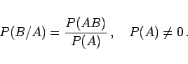
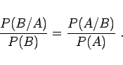
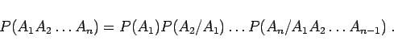

Inhalt Index DeskTop Bronstein

 Wahrscheinlichkeitsrechnung und Mathematische Statistik Wahrscheinlichkeitsrechnung Ereignisse, Häufigkeiten und Wahrscheinlichkeiten Bedingte Wahrscheinlichkeiten, Satz von Bayes
Wahrscheinlichkeitsrechnung und Mathematische Statistik Wahrscheinlichkeitsrechnung Ereignisse, Häufigkeiten und Wahrscheinlichkeiten Bedingte Wahrscheinlichkeiten, Satz von Bayes


Die Wahrscheinlichkeit für das Eintreten des Ereignisses B unter der Bedingung, daß das Ereignis A bereits eingetreten ist, die sogenannte bedingte Wahrscheinlichkeit P(B/A) oder PA(B) wird definiert durch
|  | (16.39) |
Es gilt:
|  | (16.40a) |
|  | (16.40b) |